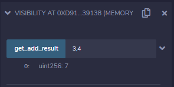

IDOR: InDirect Object Reference
In this chapter we will understand and attack Authentication & Authorization On The Ethereum Blockchain using
Indirect Object Reference (IDOR) vulnerabilities that can allow to bypass UI unprotected functionality
Smart Contract Authorization and Visibility
Smart contracts role is the same as an API that use a frontend as interface to its functionality.
You can code DApps for various platforms and access needed functionality within smart contracts for value transfers with functional logic.
Visibility of a functionA
common issue in the older versions of solidity(before v0.5.0) was that smart contract functions had public visibility by default, meaning that they were accessible by anyone knew how to interact with them. If you didn’t explicitly define the access level of the function it would automatically default to public, allowing anyone to call the function and perform actions using the contracts ABI. From 0.5.0 Explicit function visibility is mandatory
In newer versions of solidity, the compiler will complain and refuse to compile if you do not
explicitly define the visibility of a function(after
v0.5.0) as one of the following:
◇ External → Is accessible to other contracts but cannot be accessed internally to the contract
◇ Public → Is accessible to other contracts and can be accessed internally
◇ Internal → Can only be accessed within the current contract or contracts deriving from it
◇ Private → These are only visible by the contract that defined them.
example: Private vs Public functionspragma solidity ^0.6.6;
contract visibility {
//a private function cannot be called directly from an external call/interface
function add(uint _a, uint _b) private pure returns (uint){
return _a + _b;
}
function get_add_result(uint a, uint b) public pure returns (uint){
//but is possible to call private functions within the contract
return add(a, b);
}
}
In the deployed contract, we can see that we have only a button to call the public function get_add_result and not the private add function.
 *In a smart contract we need a way to actually tell who has access to a public function in order to setup authorized transactions